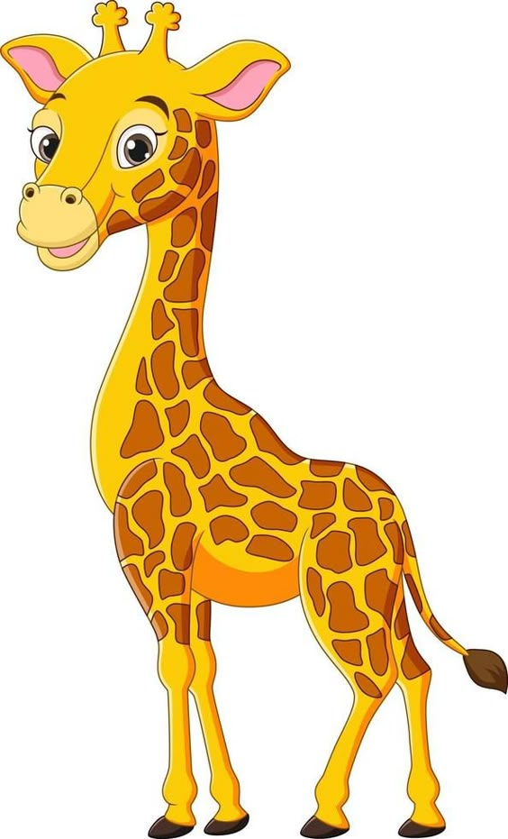
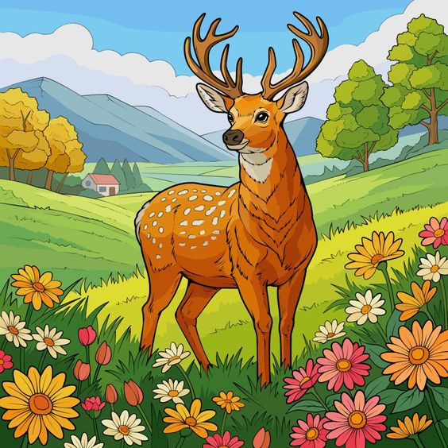

Zebras are distinctively marked animals known for their black-and-white striped coats. Native to Africa, they are social creatures that live in herds and are closely related to horses and donkeys. Each zebra's stripe pattern is unique, functioning as a form of camouflage and a means of identification among the herd. Zebras are herbivores, feeding primarily on grass, and they play a crucial role in their ecosystem by grazing, which helps maintain the balance of vegetation. Their strong sense of community and ability to run at high speeds help them evade predators in the wild.
Giraffes are the tallest land animals, easily recognized by their long necks and legs, along with their distinctive coat patterns of brown patches on a light background. Native to Africa, giraffes inhabit savannas, grasslands, and open woodlands where they feed primarily on leaves, especially from acacia trees. Their long necks allow them to reach vegetation that other herbivores cannot. Despite their height, giraffes have a graceful gait and can run at speeds of up to 35 miles per hour when threatened. They are social animals, often seen in loose groups, and play a key role in maintaining their ecosystems by pruning trees and dispersing seeds
The deer is a graceful and gentle herbivorous animal found in various parts of the world, including forests, grasslands, and wetlands. Known for their agility and speed, deer are able to run swiftly to escape predators. They are easily recognizable by their slender bodies, long legs, and antlers, which are typically found on males and shed and regrown annually. Deer are herbivores, feeding primarily on plants, leaves, grass, and fruits. They are an important part of the ecosystem, serving as prey for large predators like wolves and tigers. Deer symbolize beauty and tranquility in many cultures and are often admired for their peaceful nature.
Elephants are the largest land mammals, known for their impressive size, intelligence, and strong social bonds. There are three species of elephants: African savanna, African forest, and Asian elephants. They are characterized by their long trunks, which serve as versatile tools for grasping objects, drinking water, and communicating. Elephants are herbivores, feeding on grasses, fruits, and tree bark, and they play a vital role in shaping their ecosystems by clearing vegetation and dispersing seeds. These highly social animals live in herds, led by a matriarch, and are known for their emotional depth, exhibiting behaviors like mourning and compassion.
Monkeys are highly intelligent, agile primates known for their playful behavior and strong social bonds. They are found in various regions across the world, from tropical rainforests to savannas. Monkeys are divided into two main groups: New World monkeys, native to Central and South America, and Old World monkeys, found in Africa and Asia. They have a diverse diet that includes fruits, leaves, insects, and small animals. Many species of monkeys are known for their dexterity, using their hands and, in some cases, prehensile tails to grasp objects and move through trees. Socially complex, monkeys live in groups and exhibit a wide range of vocal and non-vocal communication.
Horses are strong, majestic animals known for their speed, endurance, and close relationship with humans throughout history. Domesticated over 5,000 years ago, horses have been used for transportation, agriculture, sports, and companionship. They are highly social animals, typically living in herds and communicating through body language and vocalizations. Horses come in various breeds, sizes, and colors, each suited to different tasks, from racing and riding to pulling loads. Herbivores by nature, they graze primarily on grass and hay. Known for their intelligence, loyalty, and sensitivity, horses have played a significant role in shaping human civilization.
The tiger is one of the most iconic and powerful animals in the world, known for its majestic appearance and strength. As the largest species in the cat family, tigers can weigh up to 600 pounds and are distinguished by their striking orange coat with black stripes. These solitary hunters are found primarily in Asia, living in a range of habitats such as tropical forests, grasslands, and swamps. Tigers are apex predators, meaning they sit at the top of the food chain, preying on animals like deer and wild boar. Unfortunately, tigers are also endangered due to habitat loss and poaching, with only around 3,900 left in the wild today. Conservation efforts are crucial to protecting these magnificent creatures and ensuring their survival for future generations.
The rabbit is a small, herbivorous mammal known for its long ears, soft fur, and strong hind legs, which help it hop quickly to escape predators. Rabbits are found in a variety of habitats, including meadows, forests, grasslands, and even deserts. They are social animals that live in groups, often in burrows or warrens, which they dig to protect themselves from threats. Their diet consists mainly of grass, leafy plants, and vegetables, making them an important part of the food chain. Rabbits are known for their rapid reproduction, and in many cultures, they symbolize fertility and gentleness. Their cute appearance and playful behavior make them popular as pets.